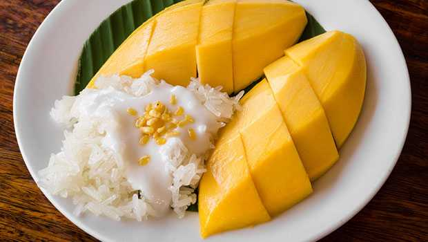
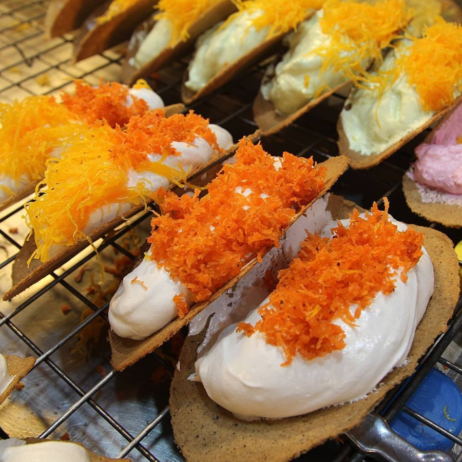
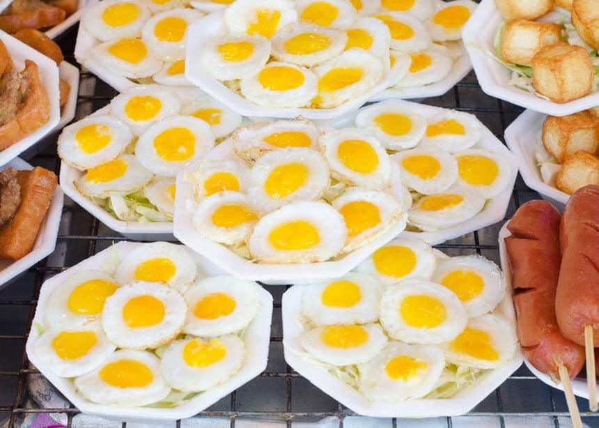
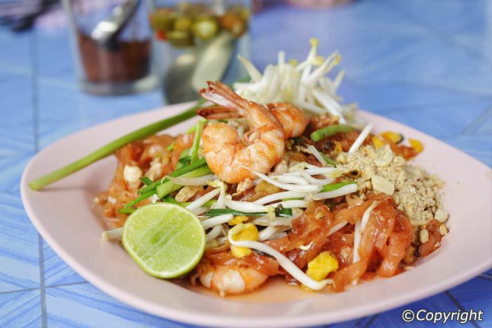

Seafood Tom Yam @ Tomyam Paa Nga
Get your authentic halal seafood tom yum fix in Pratunam at super affordable prices! Choose the level of spiciness you desire and be entertained by the super friendly owner who has been selling his delicious tom yum for many years now.
Price: Starts from THB$100 onwards
Operating Hours: 7pm till late
Location: Pratunam. It’s just across the road from Citin Pratunam Hotel.

Go healthy with Som Tam (Papaya Salad) (Spicy Green Papaya Salad)
Shredded green papaya is definitely one of the most iconic dishes when it comes to Thai cuisine. This sweet, sour and spicy dish is one of the healthiest you’d find in Thailand. They generally don’t contain meat but always check with the stall owners as certain stalls may include pork. If you’re unsure, the best place to have this yummy dish would be at Phetchaburi Soi 7 where you don’t have to be worried about your choice of toppings! (I suggest soft shell crab or salted egg. Yums!)
Price: THB$45 onwards
Operating Hours: Saturday and Sunday, 9.00am to 2.30pm
Location: Petchaburi Soi 7
Mango Sticky Rice
A classic favourite, what makes a mango sticky rice stall greater compared to other mango sticky rice stalls would be the quality of the sweet mangoes, and the fluffiness of the sticky rice. This particular stall, Partunam Sticky Rice is well known amongst locals and foreigners alike for its quality mangoes, and is located in the heart of Pratunam!
Price: THB$120
Operating hours: Evening till night
Location: Pratunam, opposite The Berkeley Hotel (beside Kaiton Chicken Rice stall)
Thai Sweet Crepe/Taco (Khanom Buang) at Sao Ching Cha
Khanom Buang is a traditional Thai dish that consists of two different kinds of fillings; the sweet being a mix of foi thong (golden egg yolk threads), coconut, persimmon or candied gourd on a pandan base or the savoury; using egg, shrimp and cilantro in a thin, crepe/taco like shell. One of the best khanom buang can be found at the heart of Sao Ching Cha in Bangkok, as this family has been making it for over 100 years!.Prices of this khanom buang may be slightly expensive for local standards, however with the quality, legacy and the fact that everything (down to the rice flour grinding) is hand-made – it is definitely worth the price! Follow the map below to navigate your way through. Your landmark to begin will be the Giant Swing and Bangkok City Hall (best to head to Sao Ching Cha via cab or grab)!
Price:THB$30 per piece
Operating hours: Mon-Sat, 10am-6pm.
Contact no.: 02-222-8500
Location: Heart of Sao Ching Cha (Giant Swing) area in Bangkok.
Fried Quail Eggs
Who would’ve thought something so simple could be so tasty? It’s a simple snack of fried quail eggs sprinkled with special seasoning and black pepper! You can find these stalls pretty much everywhere, ready to be eaten on the go! Hope you like your quail eggs sunny side up
Price: THB$100 onwards depending on stall
Location: Can be found pretty much anywhere on the streets!
Restoran Thai Somtam Seafood
Chatuchak Weekend Market or Jatujak market is a must go when you are in Bangkok and it is quite easy to find halal food at this market, just simply find stalls that display the “Halal” signs. At this market you can easily find Pad Thai which is a stir fried rice noodles.
Location: Chatuchak Weekend Market or Jatujak market